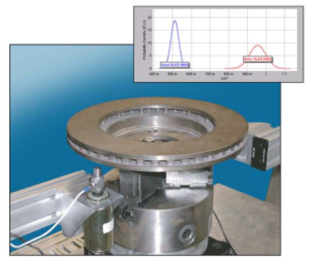
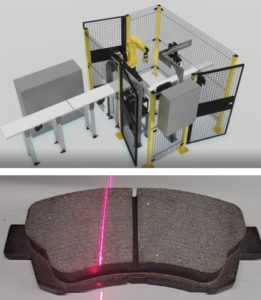

Dinger™
All structures, buildings, bridges, automobiles, airplanes, dishwashers, dental drills, roller coasters, and so on, will exhibit a mechanical vibration signature reflecting its material properties. The Dinger applies a known excitation force and measures vibration to identify the resonance frequencies of the structure.
One might assume that all manufactured parts are built to design and created equal. However in the real world this is not the case as a component occasionally doesn’t meet design specifications. Such defects can easily be identified and measured by computing a Frequency Response Function and extracting parameters such as Resonance Frequency, Percent Critical Damping, Q-Factor and even a more complex matrix of these modal parameters. The Dinger has been designed to have a smaller footprint, a higher frequency range with additional math functions for modeling the most complex of applications.
IQC Brake Test System
Today’s brake system suppliers are faced with quality requirements that far exceed identifying manufacturing defects. Vehicle OEMs are now calling for the inspection and conformance to resonance frequencies along with the identification of specific mode shapes – such as nodal diameters, infriction, and hat modes.
Ensuring that such critical and specifications are met requires a sophisticated and objective test system. Unfortunately, many brake rotor and brake drum manufacturers continue to rely on machine integration or home-grown solutions for their quality inspectors.
The key is to implement objective test and analysis solutions born from the same Modal Analysis Theory that the OEMs use to design the performance criteria written into their print specifications.

Ensuring Brake Pad Quality
Signalysis’ Robert Cagle has authored and presented papers on brake pad quality testing. Watch this short video to learn more about Signalysis brake pad quality inspection solutions.
Generally traced to manufacturing quality issues, brake pad defects can include cracks in the friction material, friction material not properly bonded with the metal backing, chips, and more. Signalysis Brake Pad Quality Inspection Test Systems replace subjective quality inspection with objective, science-based quality testing.
Crack Detection
Identify Quality Defects Quickly, Consistently & Reliably
High heat and stress expose inconsistencies, weak spots and other material properties or manufacturing flaws. Minute cracks and other hidden defects are nearly impossible to detect with subjective quality inspection. The results are customer complaints, excessive warranty claims, high scrap rates, and lost contracts